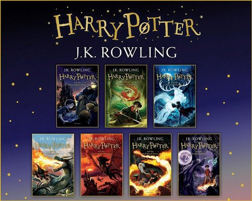

My hobby
Is Reading Books
-----
My favourite hobby is reading books.I have also read many books like all the series of Harry Potter and Percy Jackson.Reading books enhances our creativity , vocabulary , and exceeds our inspiration!Reading books keeps me happy all the time.It reduces my anger when I am angry.Readng is an important skill to have.It makes a person succesfull.
About Me
-----
My name is Achintya Gupta.I study in class 5.I have also written a book which is named as "TOMITARO A DEVIL'S LABYRINTH".I am known for my creativity and inspiration.
My Favourite Books
-----
My favourite books are shown below

*I like all the series of Percy Jackson but I have shown one image here.*
Inspiration
-----
I had read many books from which I got inspiation.My creativity , my vocbulary , everything increased.Then one day I thought how a writer's journey could be. Then I thought myself as a writer!Then was the time I decided I could write a book.Such was my confidence!